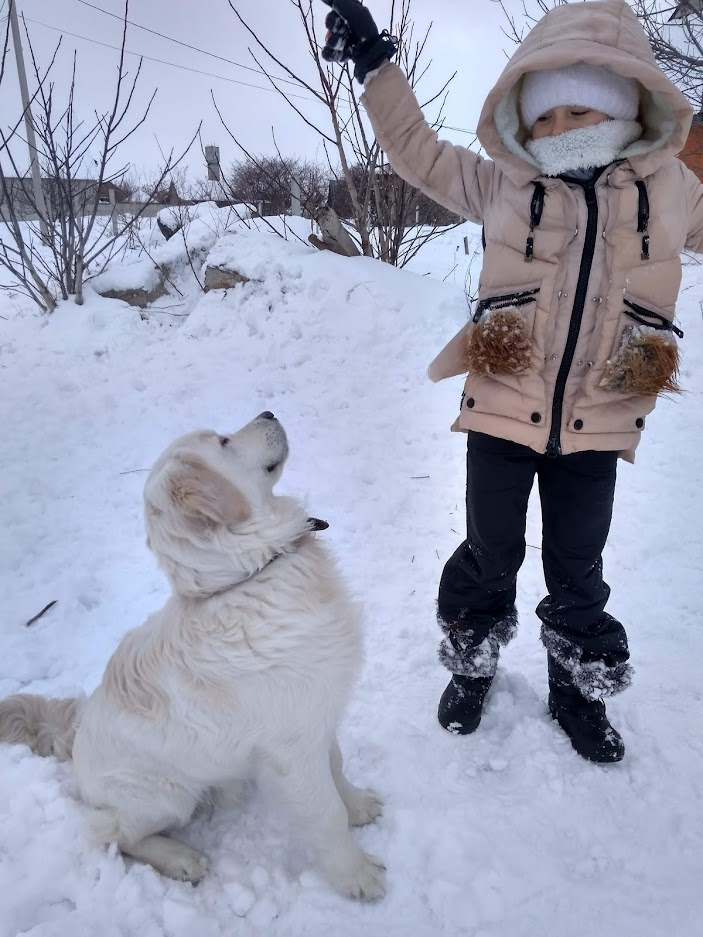
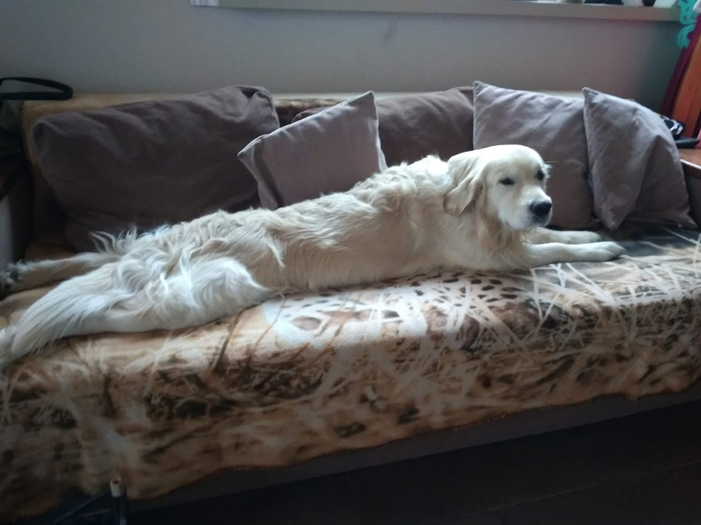

Описание породы
Золотистые ретриверы гармонично сложены, симметричны, активные, сильные, крепкие.
Голова у них всегда пропорциональная корпусу, череп слегка выпуклый и широкий.
Морда длинная и прямая, щеки плоские. Мочка носа, обладающая раскрытыми ноздрями, крупная и черная.
Уши пса плотно прилегают к щекам, висячие, с округлыми концами. Шея средней длинны, мускулистая и без складок.
Грудь в области сердца глубокая, спина короткая, ровная, с крепкими мускулами.
Хвост расположен на уровне спины, живот всегда подтянут.
Плечи сильные, по длине равны лопаткам. Лапы средних размеров, округлые с толстыми подушечками.
Характер
Основные черты характера золотистого ретривера:
- общительность
- преданность
- любовь к детям
- устойчивость психики
- дружелюбность
- покладистость
Уход

Содержать представителей золотистых ретриверов можно в любых помещениях (частный дом, квартира).
Уход за собаками такой породы не сложен. Главное сразу приучить его к режиму дня и гигиеническим процедурам.
Золотистые ретриверы – очень подвижные собаки, а поэтому независимо от погодных условий гулять с ними на свежем воздухе необходимо 2 раза в день.